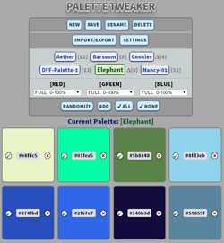
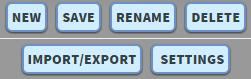
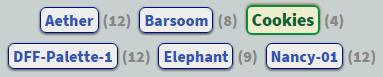
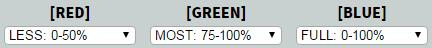
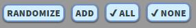
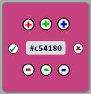
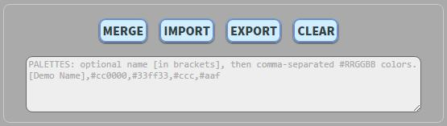
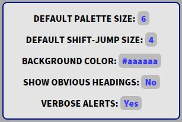
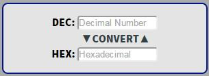
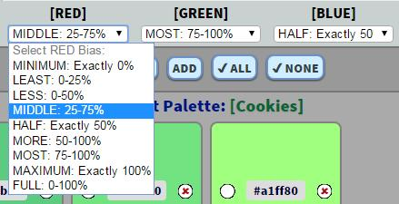

Welcome to Palettes!
Palettes is a tool for Web developers that makes it easy to create and edit color palettes. There are a lot of handy color tools out there, and here's what Palettes adds to the mix:
- You can quickly create palettes with random colors — but you can also guide the creation of random colors by putting constraints on color generation for each of the Red, Green, and Blue components. For example, you could constrain Red value to the lower quartile (0-25% of possible range), the Green value to a fixed value of 100%, and the Blue value to the upper half (50-100%). When you randomize the swatches in the palette, Palettes will use color biases to generate semi-random colors.
- When you hover over any color palette, extra commands appear that allow you to increment or decrement the Red, Green, and Blue components by 1 (or by a larger value you define in Settings).
- Color swatches are manually sortable, making it easy to compare subtle variations in swatches.
- It's easy to import, export, and merge palettes using comma-separated-values (CSV) strings like "#ffcc66,#345,#994429".
- Palettes uses the HTML5 localStorage function to store your palettes and settings between sessions.
How to Use Palettes
Overview of Palettes

Palettes provides an interactive approach to building and modifying color palettes. Sure, you've got your principled approaches based on color theories and human physiology. And then there's the I'll-know-it-when-I-see-it approach — that's what you get with Palettes. If you want to adjust a given palette, Palettes makes it easy. You can start from scratch, too, building up a palette in an interactive process where you put constraints on the individual red, green, and blue components, and then generate random colors within those ranges.The basic idea is that Palettes lets you build a palette of color swatches, either starting from a list of your own colors, or by interactively guiding a semi-random process. That's one of the key elements of PT — it's so fast when you hit the Randomize button that you can cycle through a lot of color variations quickly. As you cycle through random colors, you can select (check) the swatches you want to keep in the palette. The Randomize function keeps any checked color swatches, and simply randomizes the rest of the colors in the palette.
Palettes does not sort the individual color swatches at any time. You can rearrange the boxes by dragging them around, and Palettes will retain any order you impose. If you check some of the swatch boxes and then Randomize, all of the checked boxes will coalesce (in their current relative order) at the start of the palette.
One thing to note: reloading a palette from browser storage causes all of the swatches to be selected (the check mark), on the assumption that the prior act of saving it indicated its worthiness.
Palettes Commands
Palette Commands

- NEW: creates a new palette after prompting you for a name. An initial palette of colors is created using the Default Palette Size setting.
- SAVE: saves your palettes and settings to your browser.
- RENAME: prompts you to rename the current palette. You can also click on the current palette name to do the same thing.
- DELETE: deletes the current palette.
- IMPORT/EXPORT: toggles the visibility of the Import/Export functions. When visibile, you'll see the command buttons and the text area where values are imported and exported.
- SETTINGS: toggles the visibility of the Settings panel.
Palette Selector

- Click on Selected palette: this will prompt for a new name for the current palette.
- Click on Unselected palette: this changes the current palette to whichever palette you clicked on.
Color Bias Selectors

- Click on the dropdown selector underneath RED, GREEN, and BLUE to change the range when selecting random color values for that palette.
- Color Bias definitions are assigned from default values when a palette is created, but the values are saved separately for each palette.
- [Read more about using Color Biases.]
Swatch Commands

These commands apply to the color swatches in the cuurrent palette.
- RANDOMIZE: this will replace the color of any unchecked swatch boxes with randomly-generated colors. Random color generation is guided by the Color Bias settings (see below).
- ADD: prompts you for the #RRGGBB definition of a color, and then adds it to the current palette. The default value is a randomly-generated color based on the current color bias settings. You can enter a comma-separated-values list of colors, such as '#f45369,#009,#458822'.
- CHECK ALL: this will check (protect) all swatch boxes in the current palette. Protected boxes will not be changed by a Randomize action.
- CHECK NONE: this will uncheck all swatch boxes, allowing them to be modified by a Randomize action.
Tweaking Individual Swatches

Individual color swatch boxes offer several ways to tweak the colors values. If you click on the #RRGGBB color in the middle of the box, you'll be prompted for a new color. As a default, it offers a randomly-generated color according to the current color biases.Whenever you hover over a color swatch, Plus and Minus buttons appear that allow you to individually tweak the Red/Green/Blue components. Simple clicks change the value by 1, and Shifted-Clicks change the value by the Default Shift-Jump Size (defined in the Settings panel).
If the white circle to the left of the #RRGGBB is checked, the swatch is protected from Randomize actions.
The red 'X' to the right of the #RRGGBB value immediately deletes the swatch.
Import/Export Commands
The Merge/Export/Import buttons are located below the color swatches in the current palette. If the buttons aren't visible, click the Import/Export button in the commands palette at the top. These operations use the text buffer immediately below the buttons.

- MERGE: this will merge any color definitions in the text buffer into the current palette, even if they duplicate existing colors. For example, if you select Export and then Merge, you will end up with the current palette doubling in size. If the text in the text area also includes a palette name in brackets, the name is ignored but the colors will be merged.
- IMPORT: imports a new palette based on color definitions in the text buffer. If you don't supply a name in brackets, then a unique random name is generated. If the specified name is in use, it will refuse to perform the Import.
- EXPORT: exports the current palette to the text buffer as a comma-separated-values string. The palette name will be enclosed in brackets and prepended to the list of colors.
- CLEAR: clears the import/export buffer.
Settings
These are the global settings for using the application. You can show or hide this panel by clicking on the SETTINGS button in the top command box.

- DEFAULT PALETTE SIZE: this is how many color swatches will be initially created for a new palette.
- DEFAULT SHIFT-JUMP SIZE: when tweaking a color swatch with the plus/minus buttons, holding down Shift increases the increment from 1 to this value.
- BACKGROUND COLOR: defines the background color behind swatches, in case you need to see the colors on a different background.
- SHOW OBVIOUS HEADINGS: the different elements of the program have headings, and this will turn them off for a more concise display after you're familiar with the placement of things.
- VERBOSE ALERTS: this will suppress some of the lesser warnings.
Decimal/Hexadecimal Conversions

To convert between bases, type a number in the Decimal or Hexadecimal slot and click CONVERT, and the value will be converted to the other base. Since Palettes only works with colors expressed in hexadecimal, you'll need to convert any decimal values to hexadecimal.Using Color Biases
Here's where it gets really interesting: you can apply biases to how the red, green, and blue components of colors are randomized. By default, new palettes start out allowing the full range for each of the RGB components: 0 to #ff (which is 255). You can interactively change the biases used when creating new colors. Here are the default definitions for color bias ranges:
| Label | Range | Range (alt) | Min RGB | Max RGB |
| Minimum | 0% | None | 0 | 0 |
| Least | 0-25% | Q1 | 0 | 63 |
| Less | 0-50% | Q1-Q2 | 0 | 127 |
| Middle | 25-75% | Q2-Q3 | 64 | 191 |
| Half | 50% | (middle) | 128 | 128 |
| More | 50-100% | Q3-Q4 | 128 | 255 |
| Most | 75-100% | Q4 | 192 | 255 |
| Maximum | 100% | All | 255 | 255 |
| Full | 0-100% | Q1-Q2-Q3-Q4 | 0 | 255 |
Each time a palette is created, it initially uses a copy of the default bias settings (basically allowing the full range for all RGB color components). Since each palette has its own Bias settings, any changes made to biases will only apply to the current palette.

The example above shows the Color Bias selectors for a palette, and the dropdown for RED values is currently exposed.
Notes about Implementation
Palettes uses HTML5's localStorage API to save palettes and settings in your browser's cache. When the program starts, it will attempt to read existing palette information from localStorage. When you change a palette or setting, you'll see a red Delta (Δ) icon appear. The Save button updates values in localStorage. If you refresh the page without saving, it will revert to the last saved information.
Palettes is written in plain vanilla JavaScript with no libraries. Swatch reordering uses native HTML5 drag-and-drop. (Versions before 2.0 used jQuery and jQuery UI for Draggable and Sortable.)
While I have not (yet) provided an interface for modifying the default color bias settings, I did provide a method that allows you to do it programmatically: defineColorBiasRanges, which takes a bias_object as argument. See the definition of color_bias_table in the initializePalettes method to create your own ranges for color biases.
License
This code is licensed under the MIT License — see the terms here: LICENSE.
Have fun with it! This was just a little side project that grew into usefulness, and I hope you'll also find it useful. Palettes was originally called Palette Tweaker, and was renamed in 2026.
AUTHOR: Dennis F. Freeze • Monolith Design • dff.monolith.design@gmail.com